Parcels by flakmoped through the Swedish skerries.
You're the island courier: a three-wheeled moped with a flatbed on the front, a little archipelago of red cottages and granite, ferries to catch, weather to ride out and islanders waiting on their post.
~The game
Skärgård Express is a cosy, physical driving game about getting things there in one piece. Everything rides loose on the bed: brake hard and the eggs slide, take a corner too fast and the gas bottles go over the side. The islands go about their day around you, from the first ferry at dawn to the street lamps at night.
A load you can feel
Every parcel is its own physical object on the flatbed. Its weight changes how the moped steers and stops, and every knock, wet carton and late delivery shows in your pay.
Islands and ferries
Three islands and a string of skerries joined by footbridges and a cable ferry. Wait for the scheduled ferry, buy a Cabin Pass, or call the charter barge.
Weather that matters
Rain soaks the post and puddles the roads, snow brings black ice, autumn leaves are slippery in the woods, and storms throw up a swell.
Islanders and side quests
A cast of islanders who load and take in their parcels by hand, each with their own voice. 36 side quests, from a runaway sheep and a moose in the road to a royal visit.
A career on the islands
Daily jobs from the dispatch board, a campaign across four chapters, a reputation on each island, and a garage of upgrades: side boards and racks, straps, a tarp, mud and studded tyres, a bigger engine or an electric motor.
Off the moped
Get off and walk: carry parcels by hand, poke round the village shop, and ride the ferry deck on foot.
~Screenshots
All taken in the game as it stands in the test build.
~The test build
It's an early build, and your feedback shapes what comes next: what's fun, what's fiddly, what breaks. Read the tester guide for what to try and how to report problems.
You'll need
- Windows 10 or 11, 64-bit
- A DirectX 12 graphics card: about an NVIDIA RTX 2060 or AMD RX 5700, or better, with 6 GB of video memory
- 16 GB of memory
- About 12 GB of free space (6 GB for the download, 6 GB unzipped)
- Keyboard and mouse, or a gamepad
~Controls
| Action | Keyboard and mouse | Gamepad |
|---|---|---|
| Throttle / brake (hold the brake when stopped to back up) | W / S | RT / LT |
| Steer | A / D | Left stick |
| Reverse gear (when stopped) | Q | LB |
| Rear brake | Space | B |
| Get off and walk / get back on | F | RB |
| On foot: pick up a parcel, put it on the bed or down | E | X |
| Camera: chase, first person, top-down | C | Y |
| Look around | Mouse | Right stick |
| Job list | Tab | X |
| Garage (at the harbour office) | G | From the job list |
| Map of the islands | M | R3 |
| Horn | V | L3 |
| Back on three wheels after a tip-over | R | View |
| Pause menu | Esc | Start |
| Full screen / window | Alt+Enter or F11 | Pause menu, Screen |
~Credits
Created by Paul Bardell · Cobolt60 Studios 2026.
- Made with Unreal Engine 5 and MetaHuman (Epic Games).
- Textures and nature models from Poly Haven (CC0).
- The sheep: "Merinó" by humanti, CC BY 4.0.
- Islander voices made with Piper from the VCTK corpus (CSTR, University of Edinburgh), LibriTTS-R, Alba (CSTR) (all CC BY 4.0) and Cori (LibriVox, public domain).
- Lettering in Roboto (Apache 2.0).
- The islands, people, brands and businesses in the game are made up.